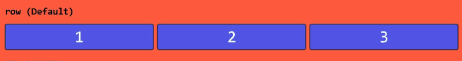
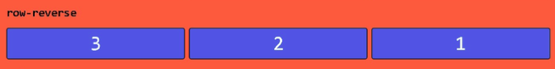
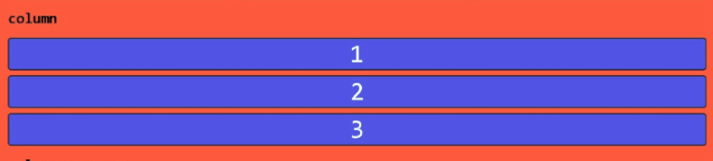
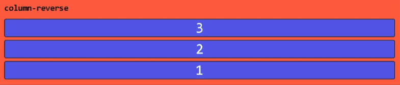
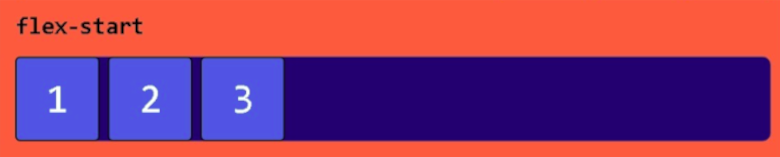
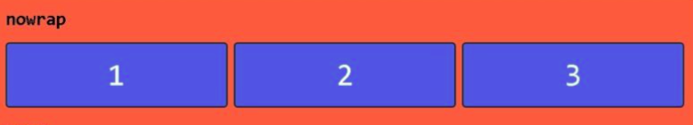
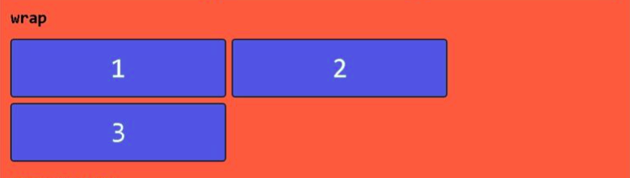
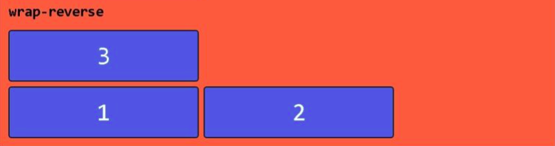

Container
Elemento Pai
Essas propriedades controlam como os filhos se organizam dentro do contêiner.
display: flex;
Ativa o Flexbox no container.
flex-direction
Define a direção dos itens na horizontal indo da esquerda para direita
flex-direction: row;
Define a direção dos itens na horizontal indo da direita para esquerda
flex-direction: row-reverse;
Define a direção dos itens na vertical indo de cima para baixo
flex-direction: column;
Define a direção dos itens na vertical indo de baixo para cima
flex-direction: column-reverse;
justify-content
Coloca todos os elementos dentro do Container agrupados do lado Esquerdo
justify-content: flex-start;
Coloca todos os elementos dentro do Container agrupados do lado Direito
justify-content: flex-end;

Agrupa os elementos no centro do eixo principal
justify-content: center;

justify-content: space-between;
Espaços entre os elementos ao longo do exio principal
Colocando o primeiro elemento no inicio do eixo.
justify-content: space-between;

Ao Redor, Distribui os elementos ao longo do exio principal com espaço no inicio e fim
justify-content: space-around;

align-items
Ocupa todo o espaço disponivel, stretch(Esticar)
Se não tiver uma altura pré definida irá ocupar o espaço todo.
align-items: stretch;

flex-wrap (enrolar)
==> Controla se os elementos quebram a linha
Tenta colocar tudo na mesma linha ao atigir a largura maxima sem brebrar a linha.
flex-wrap: nowrap;
Se não couber os elementos na largura maxima, Irá quebrar a linha, Colocando os demais elementos na linha de baixo.
flex-wrap: wrap;
Quebra de linha ao atigir a largura maxima, Colocando os demais elementos na linha de Cima.
flex-wrap: wrap-reverse;
flex-flow (fluxo flexível)
Atalho para flex-direction + flex-wrap.
justify-content
Alinha itens horizontalmente (eixo principal)
flex-start, flex-end, center, space-between, space-around, space-evenly.
align-items
Alinha itens verticalmente (eixo cruzado)
flex-start, flex-end, center, baseline, stretch
align-content
Alinha várias linhas de itens (quando há quebra de linha).
flex-start, flex-end, center, space-between, space-around, stretch
align-content
Posiciona o conteudo em Cima
align-content: flex-start;

Posiciona o conteudo no Meio
align-content: center;

Posiciona o conteudo a Baixo
align-content: flex-end;

Deixa um espaço no Meio entre o conteudo
align-content: space-between;

Coloca uma margim ente o conteudo antes, meio, fim
align-content: space-around;

gap
==> Define o espaçamento entre itens sem precisar de margin
gap
gap: Distância-Entre-Linhas e Distância-Entre-Coluna: px;
gap: 20px;
gap: 10px 30px;
row-gap e column-gap
Distancia entre as linhas
row-gap: 10px;
Distancia entre as colunas
column-gap: 30px;
Itens
Elementos filhos
Essas propriedades controlam o comportamento individual de cada item dentro do container.
order
Muda a ordem de exibição dos itens ( número menor aparece primeiro ).
.child {
order: 0 /* default */
or number
}


flex-grow -- Esticar/Crescer
OBS: Por ser unidade de proporção não é aceito valores Negativos
Define quanto o item cresce para ocupar espaço livre ( 0 = não cresce, 1 ou mais = cresce ).


flex-shrink -Encolher
OBS: Por ser unidade de proporção não é aceito valores Negativos
Define a capacidaded do item de se Encolher se faltar espaço ( 0 = não encolhe, 1 = padrão ).


flex-basis
Define o tamanho inicial do item antes de crescer ou encolher ( pode usar px, %, etc.) valor padrão é auto.
Obs: Aqui você pode ver claramente que, quando um item tem uma base flexível e uma largura, o navegador sempre usará o valor definido com flex-basis.
Mais uma vez, mais um motivo para usar o método flex correto
Mas cuidado se você também definir uma largura mínima e máxima. Nesses casos, a base flexível perderá valor e não será usada como largura.
.child {
flex-basis: auto /* default */
or width
}


flex
Atalho para flex-grow flex-shrink flex-basis, Ex: flex: 1 0 100px;
OBS: Respeite a ordem 1-flex-grow 2-flex-shrink 3-flex-basis
.child {
flex: grow shrink basis
flex: 0 1 auto
or flex-grow flex-shrink flex-basis
or flex-grow
or flex-basis
or flex-grow flex-basis
or flex-grow flex-shrink
}

align-self - Sozinho
Permite alinhar individualmente um item diferente dos outros.( mesmos valores de align-items ).
.child-1 {
align-self: stretch;
or flex-start;
or flex-end;
or center;
or baseline;
}

Selecionar apenas um elemento da lista
para nao usar class pode ser usado um pseudo-selector no css
.container div:nth-child( numero-do-elemento )
Alinhar elementos individualmente
Alinha apenas um unico elemento
align-self: end; ou start ou center
Reordenar a ordem dos elementos
Obs:Se for mover todos os elementos Tem que colocar o order em todos os elementos disponiveis.
OBS: Se for mover só um elemento tem que colocar o order no elemento a ser movido e colocar order na container div que controoa todos os elementos juntos.
order:1;